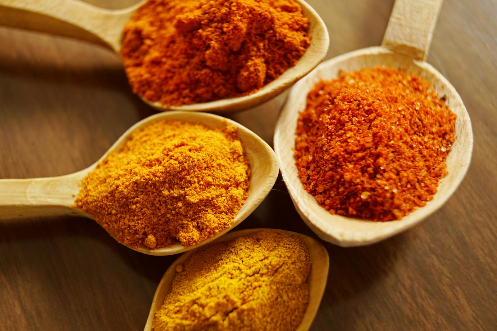
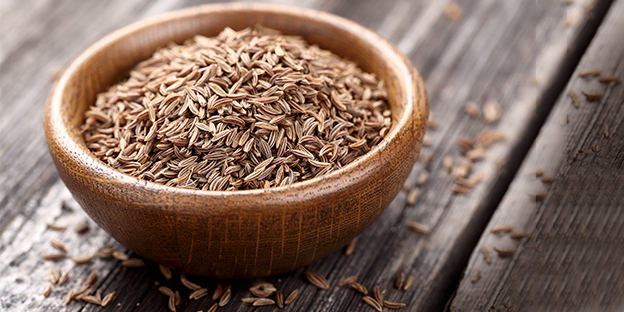
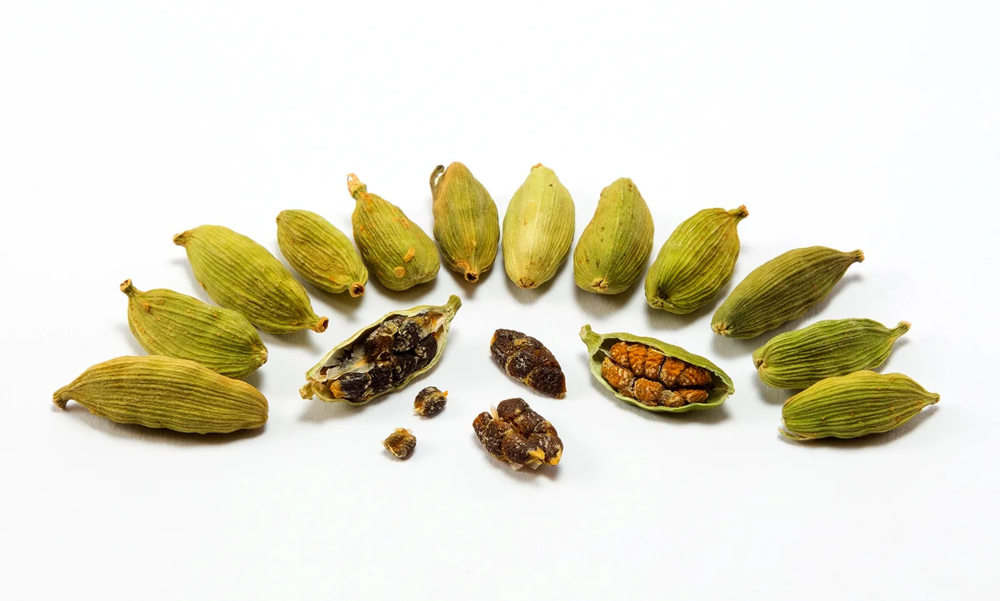
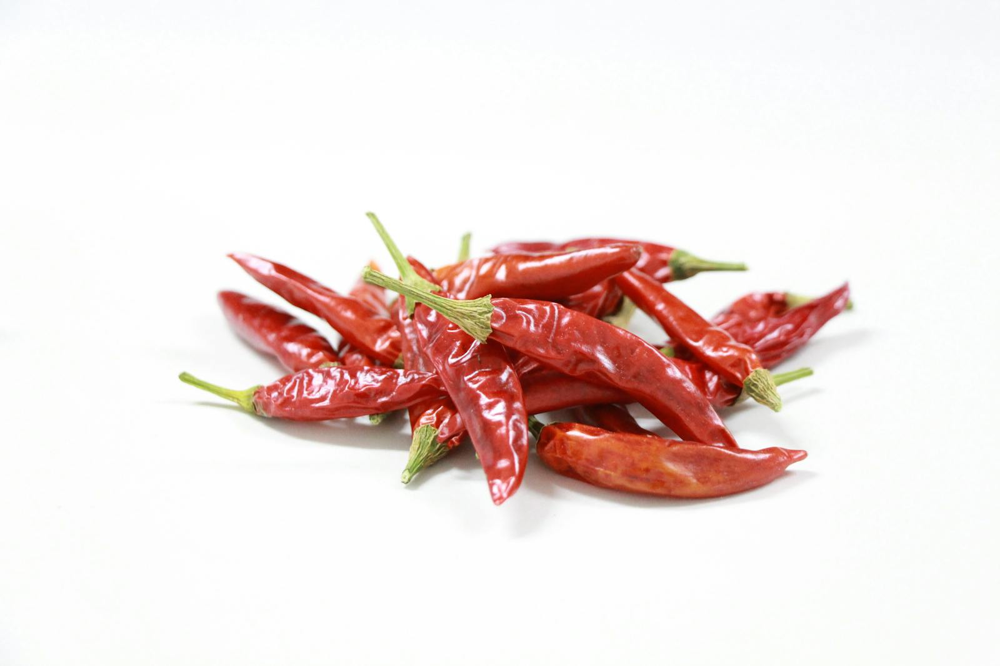
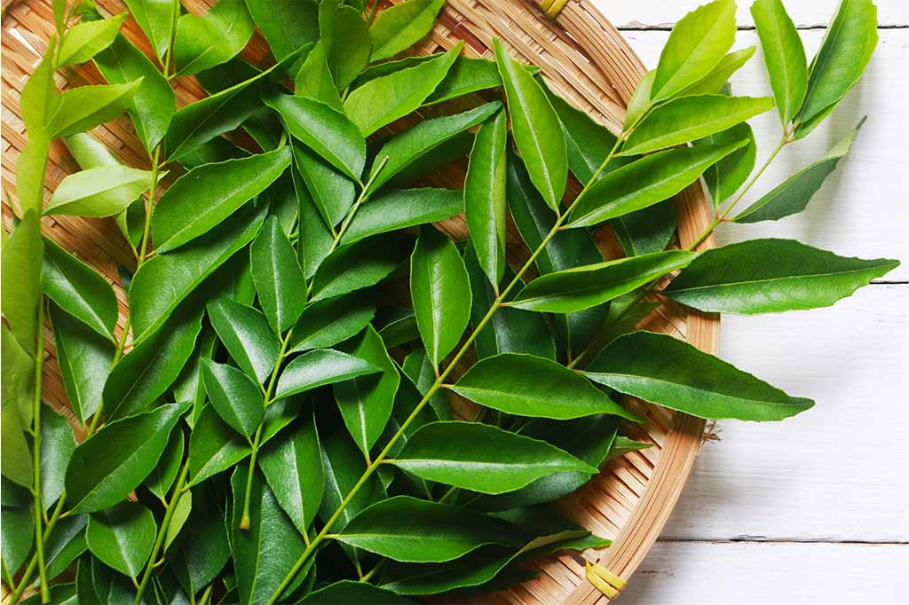

Discover the rich, bold flavors of traditional Sri Lankan spices that are the soul of our dishes. Sri Lanka is known as the "Spice Island," and its spices not only enhance the taste of dishes but also offer numerous health benefits. Here are some key spices that define Sri Lankan cuisine:
Known for its sweet, warm flavor, Sri Lankan cinnamon is one of the finest in the world. It is often used in both sweet and savory dishes, including curries, desserts, and beverages. Rich in antioxidants, cinnamon is believed to have anti-inflammatory properties and can help regulate blood sugar levels.

Turmeric is celebrated for its vibrant yellow color and earthy flavor. A staple in Sri Lankan cooking, it is used in curries, rice dishes, and soups. It contains curcumin, known for its anti-inflammatory and antioxidant properties, making it a powerful health booster.

Cumin seeds have a distinctive warm, nutty flavor and are often ground into powder for use in spice blends and curries. They are known to aid digestion and have anti-carcinogenic properties. Cumin is also used in traditional Sri Lankan dishes like "Kottu Roti" and various lentil curries.

Cardamom adds a sweet, aromatic flavor to dishes and is often used in desserts, teas, and rice dishes. This spice is known for its potential to improve digestion, enhance oral health, and provide anti-inflammatory benefits. It plays a crucial role in traditional Sri Lankan sweets and chai.

Chili peppers are essential in Sri Lankan cooking, adding heat and flavor to dishes. They are used in curries, sambols, and chutneys, and are also rich in vitamins A and C. The capsaicin in chilies is known for its metabolism-boosting and pain-relieving properties.

Curry leaves are aromatic leaves used to flavor curries and rice dishes. They are rich in antioxidants and are believed to have anti-diabetic properties. In addition to culinary uses, they are often used in Ayurvedic medicine for their health benefits.